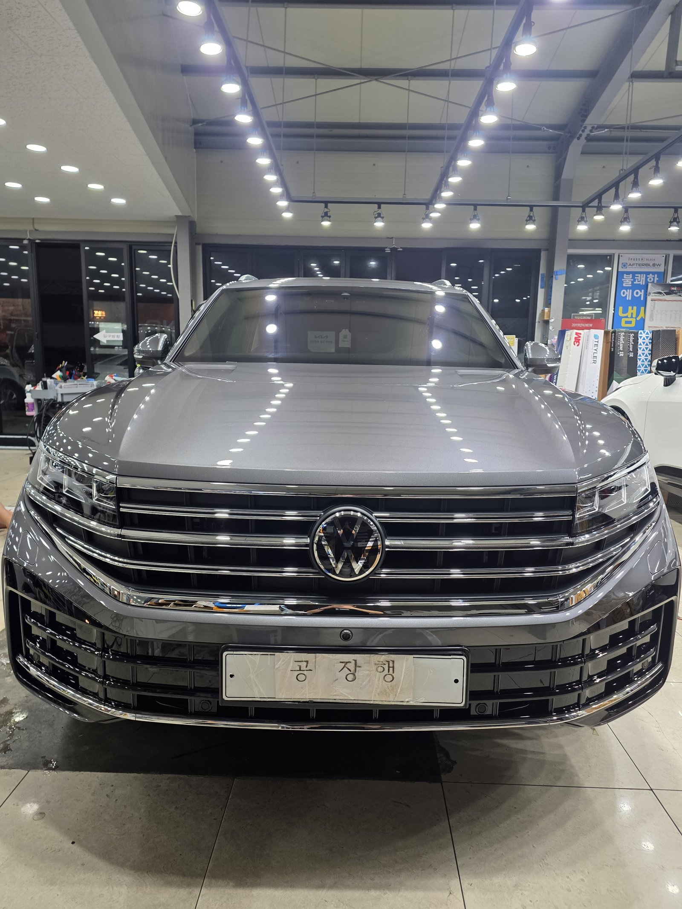
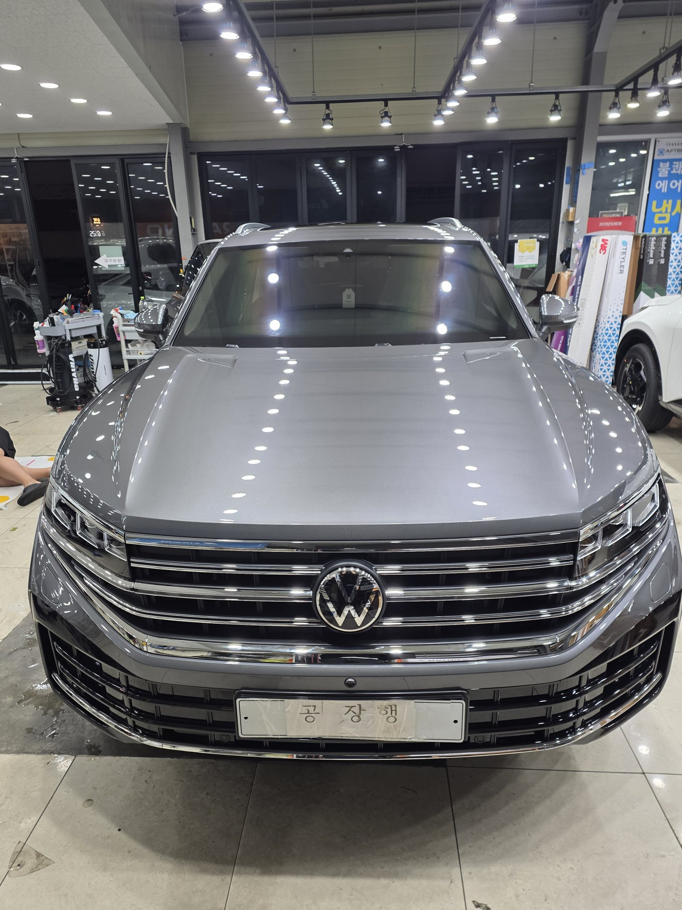
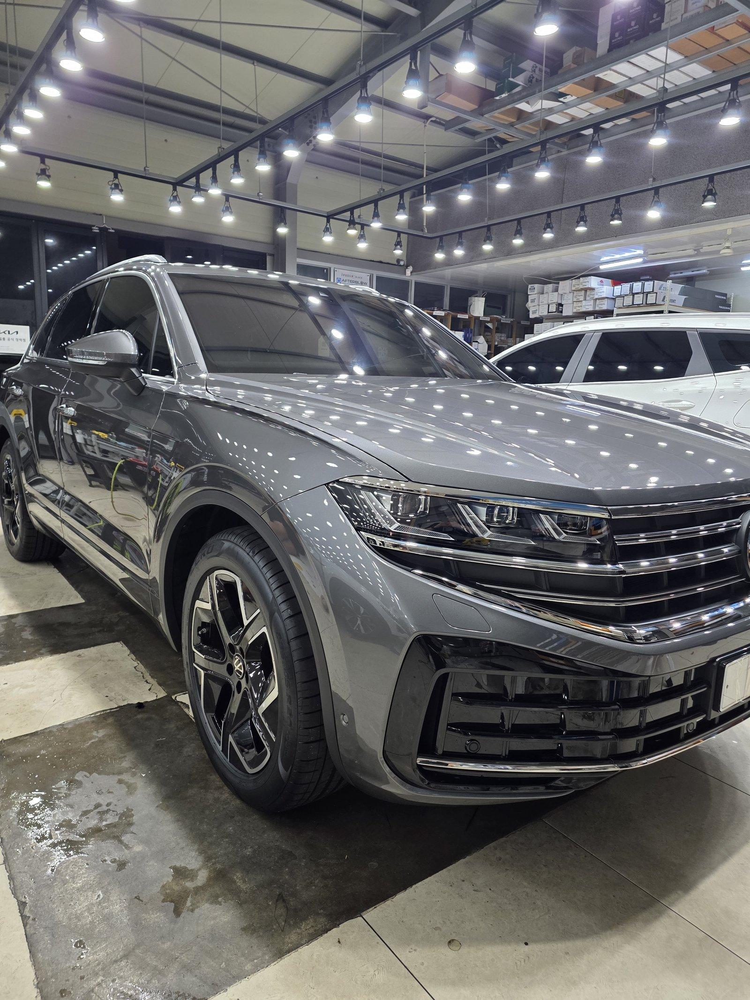
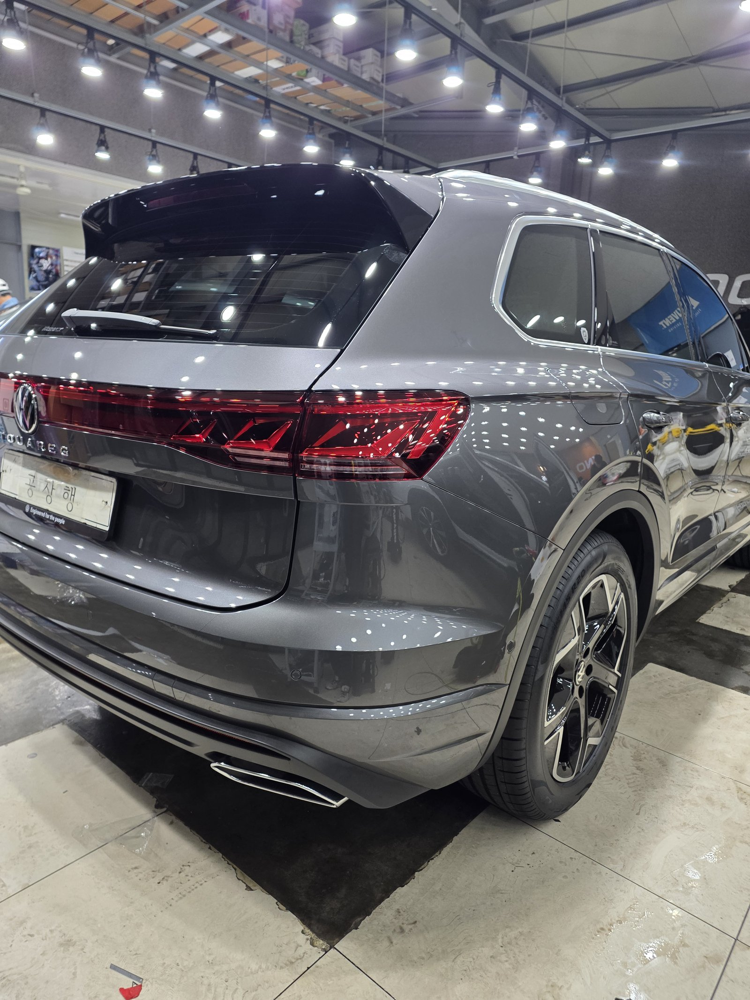
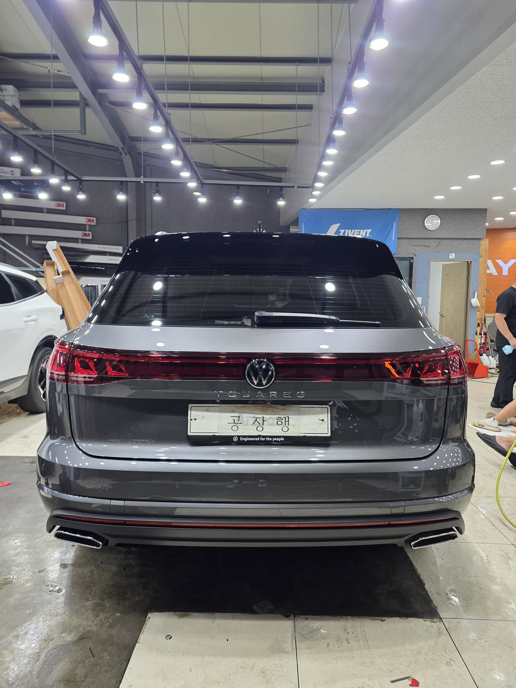
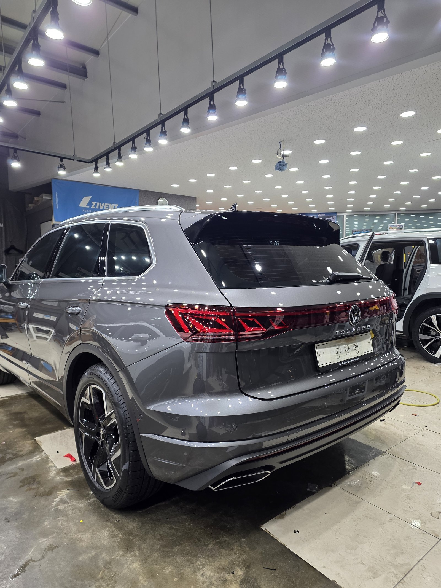
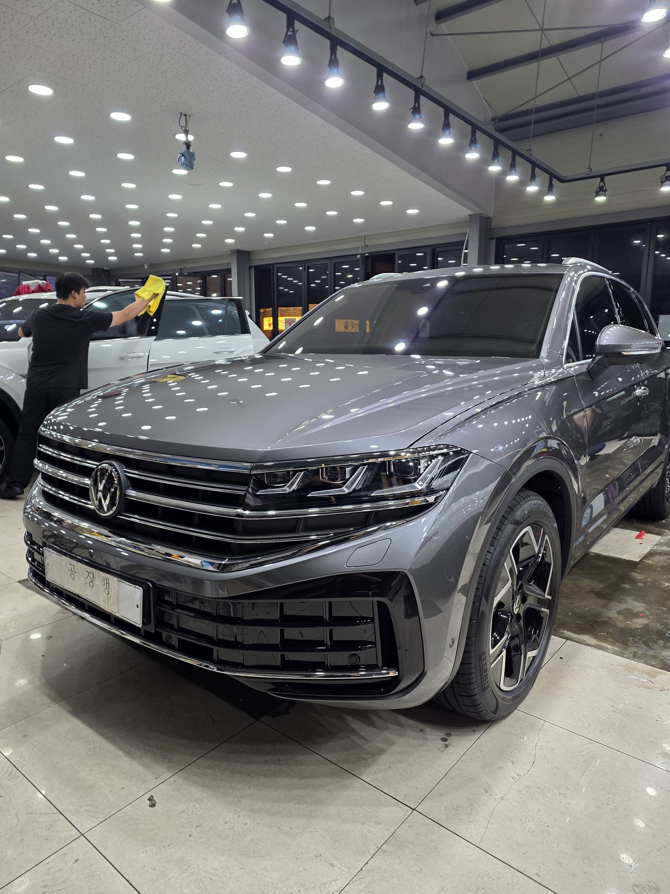
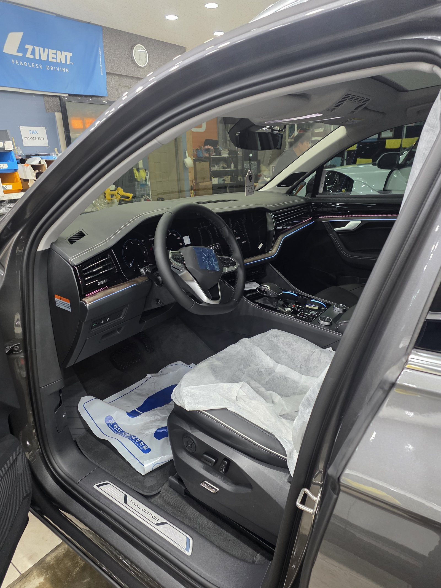
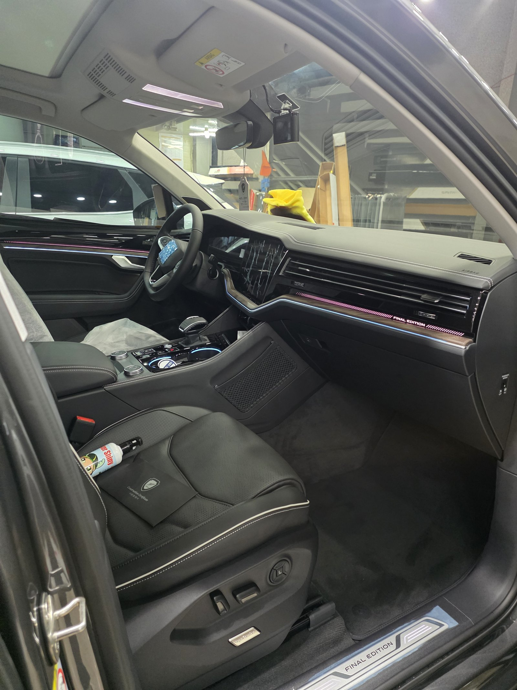
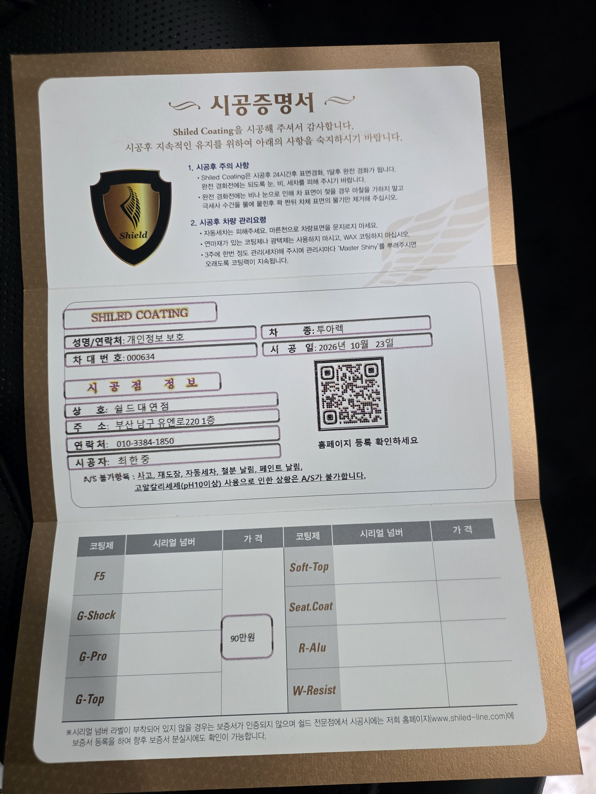

폭스바겐 투아렉, 그레이 신차입니다.
차체가 크고 면이 넓은 대형 SUV입니다.
출고 전 G-PRO로 진행한 부산 유리막코팅 기록입니다.

넓은 SUV 면은 무엇이 다른가요?
면이 넓을수록 도포 자국이 남기 쉽습니다.
투아렉은 보닛과 테일게이트가 길고 평평합니다.
한 번에 넓게 바르면 경화 속도가 부위마다 달라집니다.
그래서 구역을 나눠 바르고 바로 닦아냈습니다.
조명 줄이 보닛에 끊김 없이 비치는지 정면에서 확인했습니다.



가로 그릴과 일자형 테일램프 주변은 어떻게 하나요?
앞은 크롬 가로 바가 여러 줄 겹친 그릴입니다.
뒤는 좌우를 잇는 일자형 테일램프가 들어갑니다.
램프와 도장면이 맞닿는 경계는 코팅제가 고이기 쉽습니다.
경계선을 따라 한 번 더 닦아내며 마무리했습니다.



기술자의 팁
그레이 같은 중간 톤은 오염이 덜 보여 세차 주기를 놓치기 쉽습니다. 눈에 안 띄어도 2~3주에 한 번은 씻어 주셔야 코팅이 오래갑니다.
투아렉에 G-PRO를 올린 이유
G-PRO는 경도와 스크래치 내성에 특화된 하드코팅입니다.
대형 SUV는 문 열고 닫을 때, 짐 실을 때 손이 닿는 면이 많습니다.
도어 주변과 테일게이트처럼 손이 자주 가는 곳을 먼저 생각했습니다.
코팅제는 대표가 직접 개발·제조한 제품입니다.
이번 부산 유리막코팅은 G-PRO 싱글로 진행했습니다.


시공증명서도 함께 드립니다
모든 시공 차량에 시공증명서를 드립니다.
차종·시공일·코팅제 시리얼 번호가 적혀 있고, 홈페이지에 등록해 보증을 받으실 수 있습니다.

차종·시공일·코팅제 시리얼이 기재된 시공증명서
자주 묻는 질문
Q. 투아렉 같은 대형 SUV에 G-PRO를 권하는 이유는요?
A. G-PRO는 경도와 스크래치 내성에 특화된 하드코팅입니다. 손이 자주 닿는 도어 주변과 테일게이트가 넓은 차에 잘 맞습니다.
Q. 그레이 차량은 코팅 효과가 잘 보이나요?
A. 검정만큼 극적이지는 않지만 조명 반사가 또렷해지고 물때가 덜 붙습니다. 중간 톤이라 오염이 덜 보이는 대신 세차 주기를 꼭 지켜 주셔야 합니다.
Q. 폭스바겐 같은 수입 SUV도 출고 전에 코팅하나요?
A. 네. 브랜드와 상관없이 도장면이 가장 깨끗할 때 올린 코팅이 가장 오래갑니다.
Q. G-PRO 코팅 후 세차는 언제부터 하나요?
A. 경화를 위해 처음 며칠은 물세차를 피하시는 것이 좋습니다. 정확한 시점은 시공 후 안내드립니다.
Q. 쉴드광택 위치와 예약은 어떻게 하나요?
A. 부산 남구 유엔로220 1F 쉴드광택입니다. 예약·상담은 010-3384-1850, 대표 최한중이 직접 상담하고 책임 시공합니다.
새 차일수록 시작점이 다릅니다. 가장 깨끗할 때 입혀두십시오.
제품을 직접 만드는 사람이 직접 시공합니다.
부산에서 신차 유리막코팅을 고민 중이시면 편하게 연락 주십시오.
어떤 차를 타냐보다 어떻게 타냐가 중요합니다~!
시공 중에는 전화를 받지 못할 때가 많습니다.
카카오톡으로 차종과 원하시는 시공을 남겨주시면 확인 후 답변드립니다.
쉴드광택 · 부산 남구 유엔로220 1F · 대표 최한중